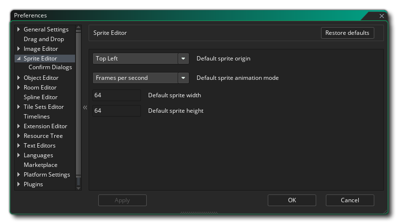

Las Preferencias del editor de Sprite se utilizan para definir cómo se ve y funciona el editor de sprites. La siguiente opción existe:
- Origen de sprite predeterminado: esta opción le permite establecer la posición de origen predeterminada para cualquier recurso de sprite nuevo que cree. El valor predeterminado es la parte superior izquierda.
- Modo de animación de sprite predeterminado: esta opción le permite establecer el modo de animación predeterminado para los sprites en el editor de sprites. Puede elegir "Marcos por segundo" o "Marcos por cuadro de juego", con la configuración predeterminada como "Marcos por segundo".
- Ancho de sprite predeterminado: esta opción le permite establecer el ancho predeterminado para todos los sprites nuevos creados en el editor de sprites. El valor predeterminado es 64.
- Altura de sprite predeterminada: esta opción le permite establecer la altura predeterminada para todos los sprites nuevos creados en el editor de sprites. El valor predeterminado es 64.
La siguiente subcategoría también existe para el Editor de Sprites:
Las opciones disponibles aquí controlan los mensajes que aparecen cuando son necesarios para confirmar una acción. Puede cambiar estas configuraciones para mostrar el mensaje siempre o descartarlo con una acción específica (ya sea Sí o No):
- Respuesta automática a la importación de archivos: cuando importa una imagen nueva y ya existe una, de manera predeterminada se le solicitará que continúe importando y sobrescribiendo la imagen existente o cancelando la operación. Esta opción le permite suprimir este mensaje y siempre cancela la importación seleccionando "No", o sobrescribe el sprite actual seleccionando "Sí". El valor predeterminado es "Mostrar mensaje".
- Respuesta automática a la falla de carga de imagen: cuando importa una nueva imagen y la importación falla, de manera predeterminada se le mostrará un mensaje de advertencia que le informa que ha habido un error. Esta opción le permite suprimir este mensaje seleccionando "Aceptar". El valor predeterminado es "Mostrar mensaje".